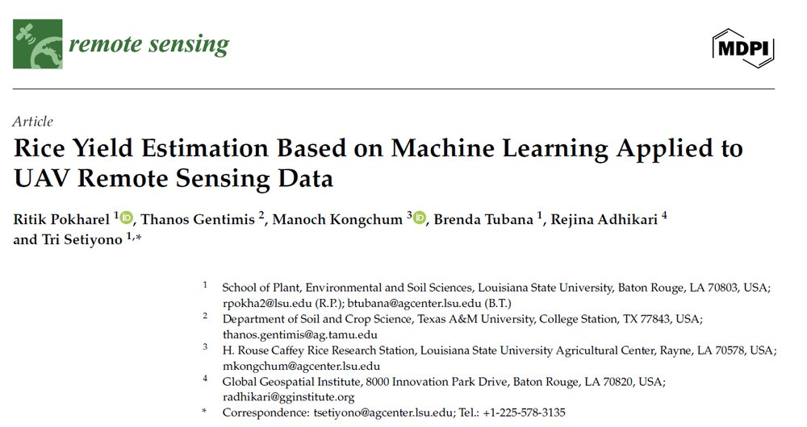
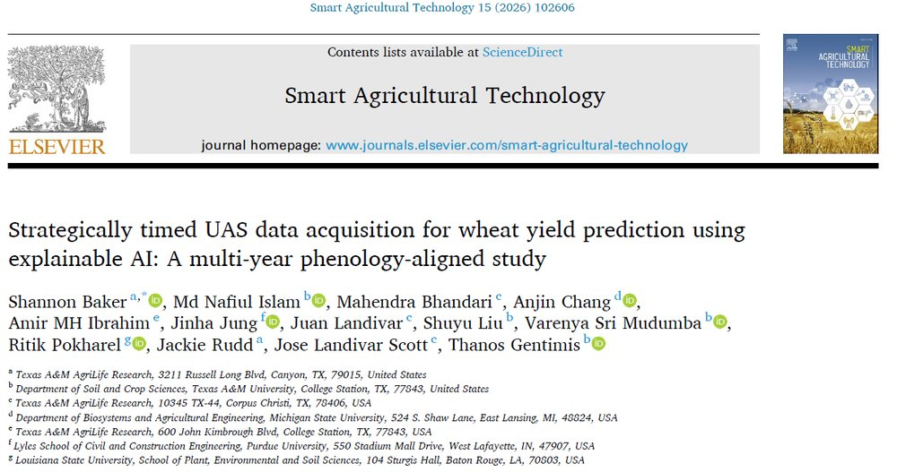
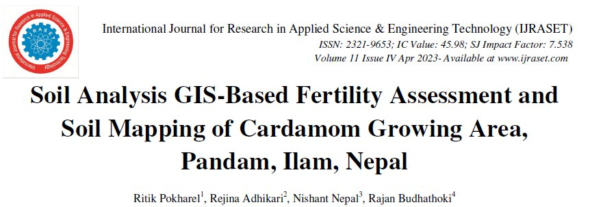

Rice Yield Estimation Based on Machine Learning Applied to UAV Remote Sensing Data
Remote Sensing, 18(10), 1575 · First author
PUBLICATIONS
Three peer-reviewed papers in Q1 journals and international outlets, on UAV remote sensing, machine learning, and GIS-based mapping.

Remote Sensing, 18(10), 1575 · First author

Smart Agricultural Technology, 15, 102606

IJRASET, 5(1) · First author
M.S. Thesis: Digital Agriculture for Rice Nutrient Management and Yield Prediction Using UAV-Based Remote Sensing and Machine Learning - LSU Repository
Full profile: ResearchGate